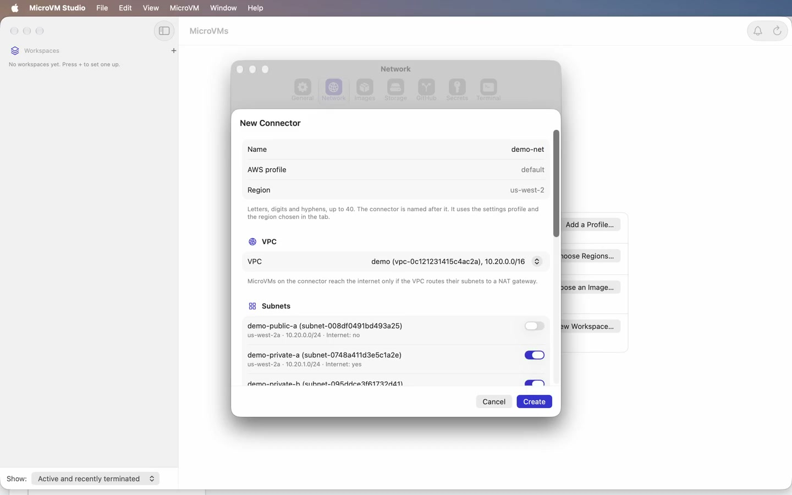
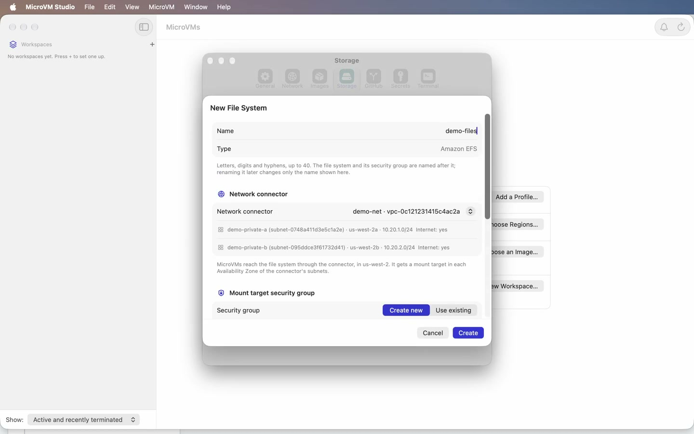
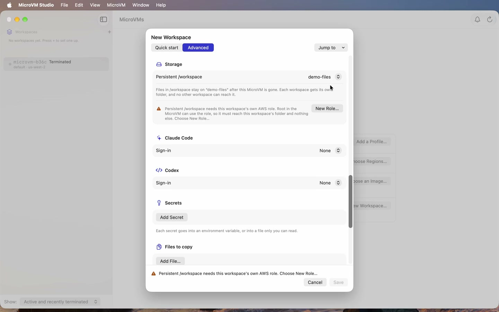
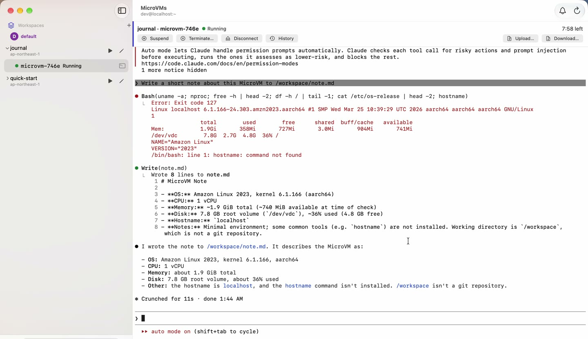
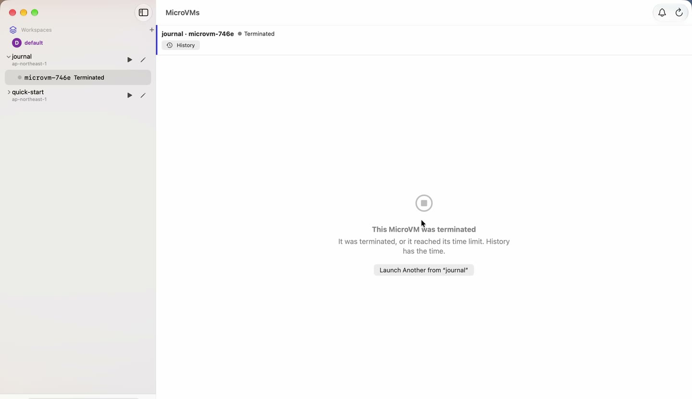
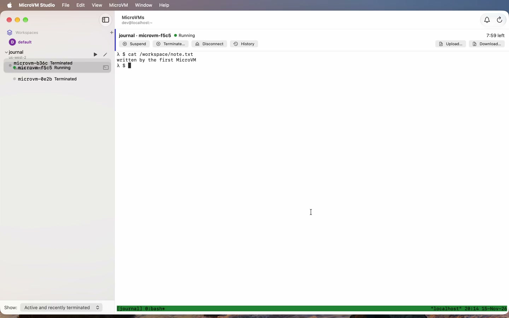

A workspace that keeps its files
By default a MicroVM's files are gone when it stops. This walkthrough puts /workspace on Amazon EFS, so a new MicroVM picks up where the last one left off.
Before you start
- The starter image, or another image with the EFS tools: see Quick start.
- A VPC with private subnets that route to a NAT gateway. The app doesn't create VPCs or NAT gateways; it uses one you choose.
Steps
Make a network connector
In Settings → Network, press New Connector…, name it and choose your VPC. Each subnet says whether MicroVMs there reach the internet. Tick the private ones that say Internet: yes: a subnet with only an internet gateway doesn't work, because MicroVMs get no public address. Create takes about four minutes.

Make a file system
In Settings → Storage, press New File System… and name it. The connector you just made is selected. Create makes an encrypted EFS file system with a mount target in each zone, in about a minute and a half.

Give a workspace the file system
In a new or existing workspace, switch to Advanced, use Jump to → Storage and choose the file system under Persistent /workspace. The network connector locks to the file system's own. Storage needs a role of the workspace's own: New Role… makes one. Then Save.

Launch and write something
Launch the workspace. In the shell,
/workspaceis the EFS mount, in a folder that only this workspace can reach.
Terminate, then launch another
Terminate… stops the MicroVM for good. Its page then offers Launch Another, which starts a new MicroVM from the same workspace.

The files are still there
The new MicroVM mounts the same folder. Repos, with their uncommitted work, are cloned into
/workspacetoo, so they carry over.
Cleaning up
Delete in this order, each in Settings: the workspace's storage choice (or the workspace), then the file system in Storage, then the connector in Network. The app says why when something can't be deleted yet. Deleting a file system deletes every workspace's files on it.
More detail: Persistent /workspace and Network Connectors in the reference.